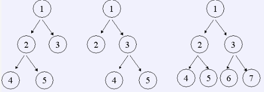

如果一棵树的所有非叶节点都恰好有 $n$ 个儿子，那么我们称它为严格 $n$ 元树。如果该树中最底层的节点深度为 $d$（根的深度为 $0$），那么我们称它为一棵深度为 $d$ 的严格 $n$ 元树。例如，深度为 $2$ 的严格 $2$ 元树有三个，如下图：

给出 $n, d$，编程数出深度为 $d$ 的 $n$ 元树数目。
仅包含两个整数 $n, d(0 < n \le 32,0 \le d \le 16)$
仅包含一个数，即深度为 $d$ 的 $n$ 元树的数目。
2 2
3
2 3
21
3 5
58871587162270592645034001
 Comet OJ
Comet OJ